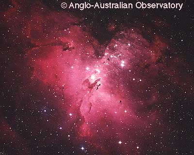
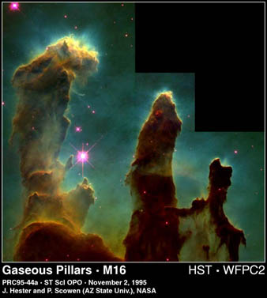
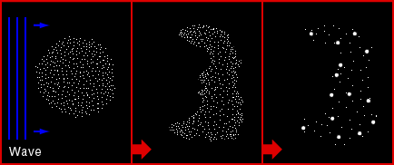
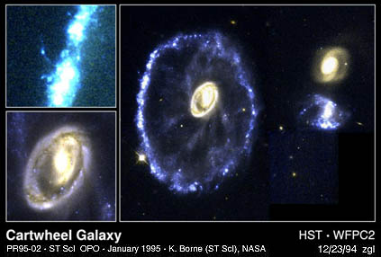
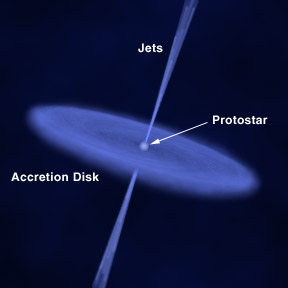
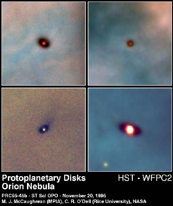
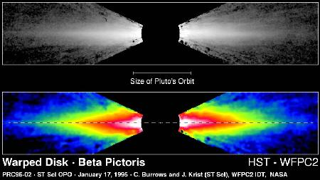
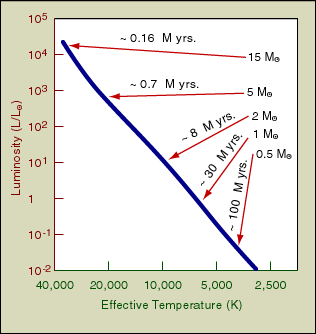
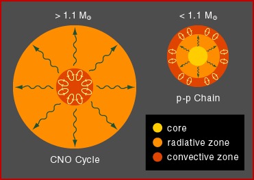

 |
| (C) Anglo-Australian Observatory and Photograph by David Malin. |
 |
| Courtesy STScI. |
Interstellar clouds could be extremely large and massive, up to thousand of light years in diameter and from 10 to 1000 solar masses. (One solar mass is defined to be the mass of our Sun, which is about 2x1030kg. It is a convenient mass unit for stars.) As we have discussed in the last chapter, the density of a nebula is very low. And it contains mostly hydrogen.
If undisturbed, the interstellar clouds will not have qualitative changes at all. However, disturbance does occur. Such disturbance may be caused by the collisions of galaxies, the density wave of the hosting galaxy, the shock wave of a supernova, or even the birth of a new star nearby.

 |
| Courtesy STScI. |
The slight change in density will trigger the contraction of the cloud by its own gravity. A "sphere" known as protostar is then formed. Since there is no nuclear reaction inside the protostar, a protostar is not a star yet. The clouds that will evolve to stars with a mass of 10 to 30 solar masses contract to approximately the size of our solar system in only 10,000 years or so and become O and B stars. Less massive ones form T Tauri type stars, which will eventually form stars of spectral types G, K or M. T Tauri stars are surrounded by a huge cloud and they are very young, with low surface temperature. They emit most of their light in the infrared region and they appear red. (A general principle is, a violent reaction will give out short wavelength waves, like gamma rays or X-rays; while a gentle process will radiate long wavelength waves, like radio or infrared.)

Models of protostar also show that they will have accretion disks and jets. Jets consist of material from the accretion disk, ejected out along the two rotational poles. The detailed mechanism is still under study. They are not long-lived and last only about 100,000 years.
If the protostar is slightly more massive than a planet, but not massive enough to burn its nuclear fuels, it becomes a brown dwarf, which is very dim and hence very difficult to find. If it is massive enough (though model dependent, the lower mass limit is about 0.1 solar mass), the gas in the protostar continues to heat up until the central portion becomes hot and dense enough for the hydrogen nuclei to overcome their mutual electrical repulsion. Nuclear fusion will then take place and a star is finally born. The light and heat generated by the star will push out the surrounding gas and dust. The accretion disk remains and becomes the protoplanetary disk, where the planets are formed later on.
 |
| Courtesy STScI. |
 |
| Courtesy STScI. |
Particles in the star move around rapidly due to high temperature creating a high gas pressure. Together with the radiation pressure generated by the photons, they exert pressure pushing outward to balance gravity's inward pull. Then, a star becomes stable and now enters the main sequence phase.

We could represent the process of formation of a star in the H-R diagram by an evolutionary track. And we will see that the mass is the most important factor that determines the fate of a star.Before the interstellar cloud contracts, it was very cold and dim. Thus, the cloud is represented by a point at the right in the H-R diagram. Upon contraction under its own gravity, the interstellar cloud heats up, and thus moving to the left in the diagram. (Note that the position of a star in the H-R diagram shows its physical properties, not its position in the sky.) The luminosity per surface area will increase because the temperature increases. But if a star is not very massive, its luminosity will drop because the size of the star/protostar decreases much faster. It takes about 0.1 to 100 million years for the cloud to become a main sequence star. After it reaches the main sequence, the star will stay there for millions to billions of years.
Most of the energy generated in the protostar stage comes from the gravitational energy of the cloud, just like a ball will drop with increasing speed from your hand if you release it. After the star enters the main sequence stage, energy comes from nuclear fusion, the combination of several small nuclei into a large nucleus. In contrast, the nuclear plants on Earth generate energy by nuclear fission, the splitting of a large nucleus to several smaller ones.
If the mass of the star is less than about 1.1 solar masses, the temperature of the core will be less than 15 million K, the main fusion reaction is the p-p chain, which turns four hydrogen nuclei to a helium nucleus. The star will have a convective shell and a radiative core just like our own Sun (See Chapter 11.).

On the other hand, if the mass of the star is greater than about 1.1 solar masses, the dominating reaction will be the carbon-nitrogen-oxygen cycle (CNO cycle). The net effect of the CNO cycle is the same as the p-p chain. But carbon is used as a catalyst. Since a carbon nucleus is six times as positively charged as a hydrogen nucleus, the CNO cycle can only operate at the higher temperature and density provided by the more massive stars. (Interested students can find the detail reactions of the p-p chain and the CNO cycle in our textbooks.)
The CNO cycle is faster and more energy is produced per second. In order to effectively transport the heat energy out from the star, its core has to be convective. The outer part of the star is still quite hot that gas is not too opaque. Therefore, radiation transport is efficient enough to bring the energy almost all the way to the stellar surface. Hence the star will have a radiative shell and a convective core.
The main sequence stage lasts for a long time in the life of a star.
For the most massive stars, because the reaction rate is much faster, they will
use up their fuel in the core in about one million years.
For less massive stars, their lives could be up to tens of billion years.